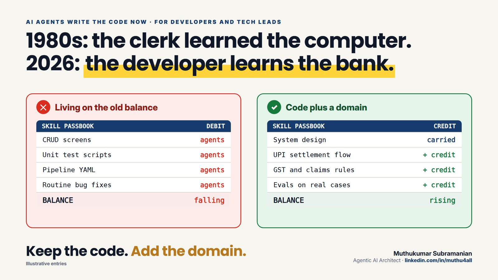

AI Agents Write the Code Now. The Developer Has to Learn the Bank.
By Muthukumar Subramanian · Agentic AI Architect

A developer in Chennai walks into an interview. Nine years of React and Node. Clean GitHub. Expects ₹22 lakh. (The story and the number are illustrative.)
The first question isn't about React.
"A customer's UPI refund failed at settlement. What should the agent do next, and who needs to know?"
Silence. Nine years of building banking screens, and nobody ever asked what happens behind them.
I've seen this moment before, except the person in the chair looked different.
In the 1980s, when machines came to Indian banks, many clerks and their unions feared for their jobs. The ledger had been the job, and now a machine could post it. Some people learned the new terminal. Some waited for it to go away. It didn't.
The clerk had to learn the computer. Now the developer has to learn the bank.
In "A Nobel Laureate Says AI Will Take Only 5% of Work. Here's Why the Dip Will Still Hurt." I drew the big graph. This piece is the practical half: if you're the person standing in the dip, what do you do on Monday?
What's actually happening to the job
I've been in IT for 25 years, at Infosys and then as a consultant and fractional executive, across everything from legacy systems to agentic AI. I've never seen the cost of writing code fall this fast.
But look at what's getting cheaper. Screens, CRUD, test scripts, pipeline files. That's the implementation layer. AI agents are absorbing it quickly. What's not getting cheaper is knowing what should be built, why a rule exists, and what breaks when it's wrong.
So innovation moves up, to the human brain, and the agent helps carry it out. Code is becoming the cheap part. Knowing what to build isn't.
Daron Acemoglu, who shared the 2024 Nobel in economics, made a related case in his July essay in The Humanist Review of AI, "Will AI Replace Workers? Not If We Build It Right." He wants AI built to make people better at their jobs, not to automate them away. He calls it pro-worker AI, and he's talking mainly to the people who build the tools.
This piece is the worker's side of that argument. A job isn't one thing. It's a bundle of tasks, and agents take it apart task by task long before the job title disappears. So don't compete with the agent on its tasks. Pair with it on yours.
The numbers already show the squeeze, and they're uneven. Stanford's Canaries research, updated in August 2026, finds workers aged 22 to 25 in the most AI-exposed US jobs about 19% behind their peers in less-exposed roles. It also finds no economy-wide displacement. Nasscom expects India's tech workforce to reach 5.95 million in FY26, with only about 135,000 net additions, and says campus hiring is down. The WEF expects 39% of key skills to change by 2030.
Read those together. The industry isn't collapsing. The door has narrowed, and the skills that open it have changed.
Here's my contrarian take: a developer's biggest competitor isn't the AI agent. It's the claims officer who learned to use one.
👉 [IMAGE: C-developer-bank-2-in-article-role-shift.png]
Caption: Where each role can move. The titles are still settling, but the direction isn't.
Your skill passbook
Think of your career as a bank passbook. Some entries are being debited: agents do that work now. Don't take it personally, and don't pretend it isn't happening.
Some carry forward: system design, debugging a live failure at 2 AM, knowing why the old system behaves the way it does. Those got more valuable, because someone has to check what the agents wrote.
And some credits are new, and they're mostly not technical. How a UPI settlement really works. How GST reconciliation breaks. What a claims officer does when the policy document and the core system disagree.
Keep the code. Add the domain.
The last 1% is where you get paid
Acemoglu points to something every engineer has felt lately: the hours spent debugging code the AI wrote. And from years of using dictation, he warns that even at 99% accuracy, "that 1% can completely change the meaning."
Now move that to a bank. An agent that's right 99% of the time on 10,000 refunds is wrong on 100 (illustrative). Which 100? Would you recognise a wrong one if you saw it?
A developer who only knows React can't tell. One who knows the settlement cycle can. That last 1% is the job now, and you can't check what you don't understand.
Five moves I'd make
→ 1. Full-stack developer → forward deployed engineer or domain engineer. A forward deployed engineer (FDE) sits with the customer's team and ships the agent on their real systems. Indeed's numbers show Indian FDE postings rising fast, from a small base.
→ 2. CI/CD engineer → AgentOps engineer. You already know rollouts, rollback and monitoring. Agents need all three, plus evaluation scores.
→ 3. QA tester → evals engineer. Writing the test set for an agent is real skilled work. It needs someone who thinks about how things go wrong.
→ 4. Business analyst → context engineer. Deciding what an agent may read, and how fresh it must be, is the BA's old job with sharper teeth.
→ 5. L1 support → AI Agent Manager. You know what customers really ask. Someone has to watch the agent, review its failures and tune it.
These titles are still settling. Don't chase the title. Chase the work behind it.
A 90-day plan
→ Days 1–15: pick one domain. Banking, insurance, GST, healthcare claims, logistics. Pick the one closest to your current employer. Depth beats a tour of five.
→ Days 16–40: learn its money flow. Where does the money enter, who checks it, what breaks at month-end? Sit with an operations person for a week if you can. It's the best free course in India.
→ Days 41–70: ship one agent on a real legacy system. Not a demo on clean data. Something that reads from an old system and survives an ugly input.
→ Days 71–90: learn evals, then show your results. Build a test set of real bad cases. Publish what failed and what you fixed.
👉 [IMAGE: C-developer-bank-3-in-article-90-day-plan.png]
Caption: One domain, one real agent, one honest evaluation. It's a plan, not a guarantee.
Watch the passbook
👉 [GIF: C-developer-bank-4-in-article-passbook.gif]
Caption: The routine work is debited. The domain is credited. The balance dips before it rises. Illustrative.
The hard parts
I don't want to sell you a comfortable story.
→ Some people won't make this shift. That was true for clerks too. Some were near retirement, some had nobody to teach them, and some just couldn't afford the time. That's a real human cost, and I won't wave it away.
→ Freshers and seniors get hit differently. Freshers lose the small tasks they used to learn on. Seniors have the judgement, but may have to accept being a beginner again, in a domain, at 40.
→ Domain work is slower and less glamorous. A week with an insurance claims desk won't look like a hackathon.
→ Pay may dip during the switch. Moving sideways into a new domain can cost you, for a while. Plan your EMIs before you plan your career move.
→ Companies rarely fund this. Most re-skilling budgets buy course licences. You may have to do this on your own time, which is unfair and also true.
→ I could be wrong on the timing. The shape of this graph is my judgement. Nobody knows how deep the dip goes, or how long it lasts.
The opportunity
→ For developers: a domain plus agents is a far smaller crowd than React plus Node.
→ For IT services firms: retrain your bench into FDE pods, one industry at a time. You already have the delivery muscle, and your people already know your clients' old systems.
→ For colleges and training companies: stop teaching frameworks alone. Teach one domain with real data and real failure cases.
→ For domain experts: Acemoglu's example is a tool that helps electricians take on harder work, built from what seasoned electricians know. In India, I'd start with the claims officer, the CA and the bank operations lead. They can now build small agents themselves, and that's a real career.
The clerk who learned the computer didn't stop being a banker. That was the whole point.
Your turn 👇
If you're a developer in 2026, what would you learn next: a new framework or a new domain? Pick one.
Tag a developer you respect who should read this before their next interview.